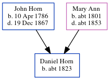

Daniel Horn c1823 -
[ Home ] | [ Calendar ] | [ Surnames Index ] | [ Errors ] | [ Family History ]A servant domestic inn and the child of John Horn (a labourer) and Mary Ann, Daniel Horn, the three times great-uncle of Nigel Horne, was born in Chapel Hill, Margate, Kent, England c. 18231,2,3 and baptised in Margate, Kent, England on 23 Sept 1823.
During his life, he was living at Sprattling Street, St Lawrence, Thanet, Kent, England on 30 Mar 18517; at Alva Cottages, Westwood Hamlet, St Peters in Thanet on 2 Apr 18714; at Star Farm, St Peters in Thanet on 3 Apr 18815; and at Isle of Thanet Union Workhouse, Minster in Thanet on 13 Apr 18916.
Parents
- John was born on 10 Apr 1786
- Mary Ann was born c. 1801
Citations
- 1851 England Census Online publication - Provo, UT, USA: The Generations Network, Inc., 2005.Original data - Census Returns of England and Wales, 1851. Kew, Surrey, England: The National Archives of the UK (TNA): Public Record Office (PRO), 1851. Data imaged from the National
- 1871 England Census Online publication - Provo, UT, USA: The Generations Network, Inc., 2004.Original data - Census Returns of England and Wales, 1871. Kew, Surrey, England: The National Archives of the UK (TNA): Public Record Office (PRO), 1871. Data imaged from the National
- 1881 England Census Online publication - Provo, UT, USA: The Generations Network, Inc., 2004. 1881 British Isles Census Index provided by The Church of Jesus Christ of Latter-day Saints © Copyright 1999 Intellectual Reserve, Inc. All rights reserved. All use is subject to the
- 1871 England, Wales & Scotland Census - Findmypast (was age 47 and the head of the household)
- 1881 England, Wales & Scotland Census - Findmypast (was age 56 and a servant in the household)
- 1891 England, Wales & Scotland Census - Findmypast (was age 68 and a inmate in the household)
- 1851 England, Wales & Scotland Census - Findmypast (was age 26 and a servant in the household)
Media
1871 England, Wales & Scotland Census - GBC/1871/0014308690
1881 England, Wales & Scotland Census - GBC/1881/0004871237
1891 England, Wales & Scotland Census - GBC/1891/0005857981
1851 England, Wales & Scotland Census - GBC/1851/0005890834
Family Tree
Map
Generated by ged2site. Last updated on Jul 3, 2024
Known Issues
Census information missing between Census UK 1851 and Census UK 1871